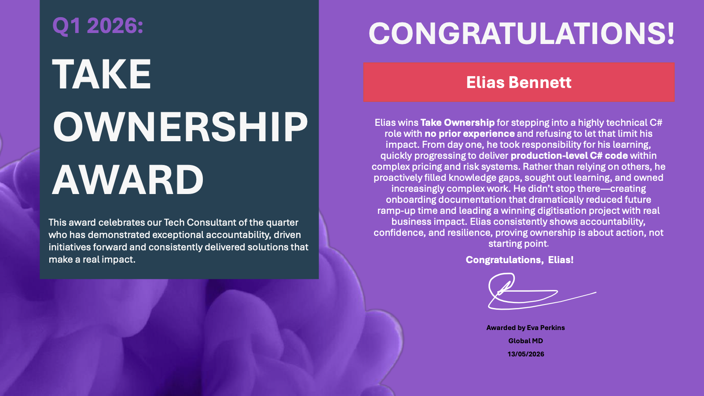

The role
The engines run large simulation-based calculations across several asset classes. It’s a big codebase, around 70 projects, and some of the C# is translated to run on the GPU.
I joined in July 2025 having never written C#. Today I own implementation and delivery on the C# side, from planning through review.
The problems
- Market data.Loaders written in Java had to be ported to C#, pulling data from several sources into one place and checking it on the way.
- A stale dependency.The live pricing pipeline relied on a data file that was no longer reliably available in production.
- Quant code.Pricing code written by quantitative developers had to be integrated into the engine.
- Two execution paths.The same tests had to run on both CPU and GPU.
Decisions
- Ship the risky change behind a flag, switched off.Removing the dependency touched live pricing, so I put the new path behind a feature flag that defaults to off, added caching and wrote an end-to-end test nobody had asked for. The architect’s view was that the thing to protect was the blast radius, not only correctness. I’d have called that a nice-to-have before; now it’s how I start.
- Validate the data before trusting it.The commodity loader was the harder one: ten file types, correlation groups, unit conversions and records linked to each other. I checked the links, so an orphaned record gets caught on load rather than showing up as a strange number in a simulation.
- Give AI work phases.I built a workflow where each stage has its own scoped agent: grill the problem, plan, build test-first, self-review, then a health review. Each agent only sees what that stage needs, which keeps it from skipping ahead.
Live pricing · today’s path
New path · no stale file · cachedoff by default
What changed
I used that workflow to integrate a pricer into the calculation engine in a couple of days. For an experienced integration engineer it takes about two weeks, and I was new to it.
The bank’s digitisation competition is the other half of this. I led a team of four and co-built a dashboard from our users’ requirements, which cut a 30–40 minute data load to under 5. We won, out of five groups, and presented it to the Head of Risk Systems.
Integrating a pricer
An experienced engineerabout two weeks
Me, new to ita couple of days
The competition dashboard’s data load
Before30–40 min
Afterunder 5 min
What I took with me
I was nominated as an AI Champion in the risk division, and the workflow is now used by several teams across the department. I also won a Take Ownership award.
The habit underneath all of it: write down what you’re doing before you build it, and ship it so it’s safe to undo.
